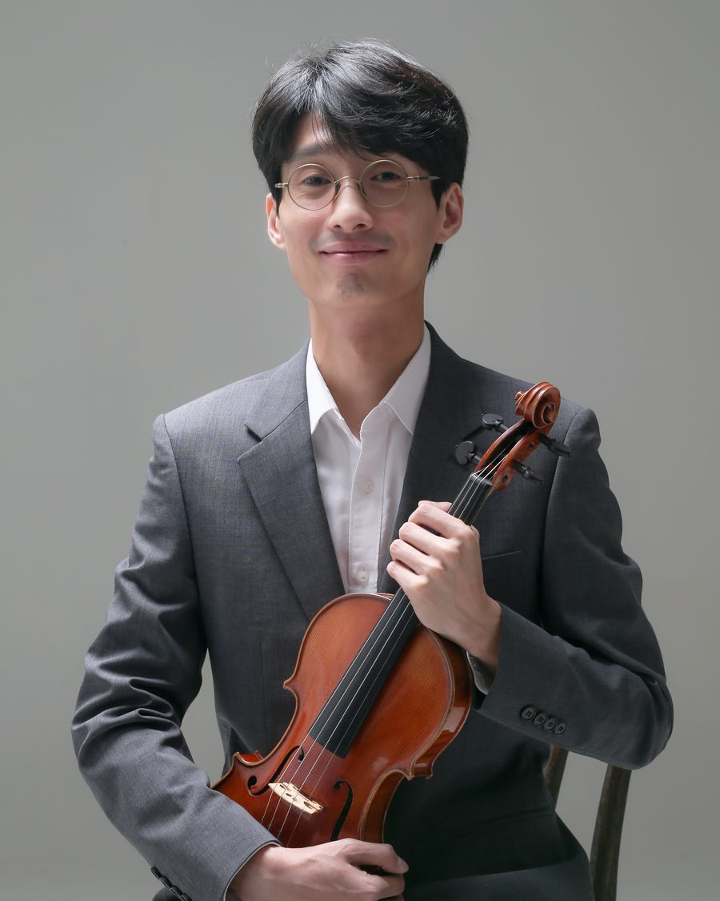

→ 단원 목록으로

바이올린
이강원
수석바이올린
주요 약력
- 서울예고 졸업
- 베를린 국립음대(UdK) 학사·석사 졸업
- 데트몰트 국립음대 최고연주자과정 최우수 졸업
- UdK 챔버오케스트라, 성남시향, 대구시향, 강남심포니, 경북도립오케스트라 등 협연
- 베를린 대성당, 상트페테르부르크 미하일롭스키 성, 쇼팽국립음악원, 바르샤바 라 폴 쥬르네 등 초청연주
- 전남대·계명대·창원대·예원·서울예고·대구가톨릭대학교 외래교수 역임
- 앙상블 마루, 앙상블 타라 리더, 앙상블 토니카 음악감독, 대구 비르투오조 챔버 수석
- 현) 한양대학교·경북대학교·계명대학교·경북예고 출강